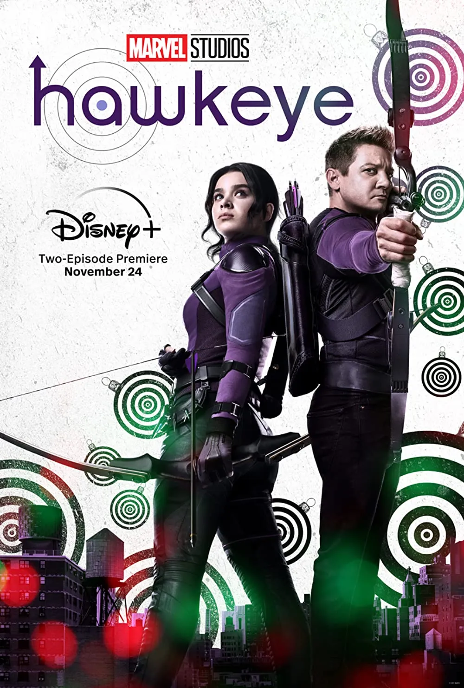

Tudo sobre Hawkeye
Hawkeye (bra: Gavião Arqueiro; prt: Hawkeye - Gavião Arqueiro) é uma minissérie estadunidense criada para o Disney+ por Jonathan Igla, baseada nos personagens Clint Barton / Gavião Arqueiro e Kate Bishop, da Marvel Comics. É a quinta série televisiva do Universo Cinematográfico Marvel (UCM) produzida pelo Marvel Studios, dando continuidade aos filmes da franquia e ocorrendo após os acontecimentos do filme Avengers: Endgame (2019). Igla atua como roteirista principal, com Rhys Thomas liderando a equipe de direção.
Sinopse
Um ano após os eventos de Avengers: Endgame (2019), Clint Barton deve trabalhar junto com Kate Bishop para enfrentar os inimigos de seu passado como Ronin e ainda voltar para sua família a tempo para o Natal.
Produção
Em setembro de 2018, a Marvel Studios estava desenvolvendo várias séries limitadas para o serviço de streaming de sua empresa-mãe Disney, Disney+, centradas em personagens de "segunda linha" dos filmes do UCM que não tinham e provavelmente não iriam estrelar seus próprios filmes. Em abril de 2019, o desenvolvimento de uma série de aventura estrelando Jeremy Renner como seu personagem do UCM, Clint Barton / Gavião Arqueiro, começou. Esperava-se que a trama seguisse Barton enquanto ele deixava o manto de Gavião Arqueiro para Kate Bishop. Feige foi confirmado para produzir a série limitada, que duraria de seis a oito episódios. Renner havia originalmente assinado um contrato para estrelar um filme solo focado em seu personagem, mas concordou em estrelar uma série depois que Feige decidiu redesenvolver o projeto para Disney+. A produtora executiva Trinh Tran acrescentou que mudar de um filme para uma série permitiu à Marvel "a flexibilidade criativa" de ter seis horas para explorar mais a história de Barton, apresentar Bishop e "permitir tempo suficiente para que eles se unissem e criassem aquela dinâmica especial que todos acham tão atraente nos quadrinho ", em vez de duas horas em um filme. Feige anunciou oficialmente Hawkeye na San Diego Comic-Con em julho. Em setembro de 2019, Jonathan Igla foi revelado como o roteirista principal da série. Amy Berg também foi uma candidata para ser roteirista principal. Em julho de 2020, Rhys Thomas foi contratado para dirigir três episódios da série e atuar como produtor executivo, com a dupla de cineastas Bert & Bertie contratada para dirigir os outros três. Borys Kit, do The Hollywood Reporter, sentiu que a contratação desses diretores indicava que a série poderia ter um "tom alegre", dado o trabalho anterior de cada um. Brad Winderbaum, Victoria Alonso e Louis D'Esposito também atuam como produtores executivos. A série consiste em seis episódios. Os orçamentos para cada episódio foram relatados em até 25 milhões de dólares.
Elenco
Com o anúncio oficial da série em Julho de 2019, Jeremy Renner foi confirmando para estrelar a série como Barton.
No início de setembro de 2019, foi oferecido a Hailee Steinfeld o papel de Kate Bishop,
mas ainda não havia assinado para a série um mês depois.
A Variety relatou que uma das razões para isso era uma cláusula de não concorrência em seu contrato com a Apple TV+ para estrelar a série Dickinson,algo que a Variety sentiu que Steinfeld seria capaz negociar para tirar do contrato. Nenhuma outra atriz foi considerada para o papel de Kate Bishop.
Quando perguntada sobre estrelar a série logo depois, Steinfeld disse que "não é algo que está necessariamente acontecendo"; Steinfeld foi confirmada como Kate em dezembro de 2020.
Tran observou que o Marvel Studios "não conseguia falar sobre seu envolvimento" antes, quando a anunciaram no papel, acrescentando que Steinfeld nunca estava fora da contenção e a Marvel estava apenas "tentando descobrir como podemos realizar a série" entre os relatórios iniciais e o início das filmagens para que seja lançada durante a temporada de natal de 2021.
Membros adicionais do elenco também anunciados em dezembro de 2020 foram Vera Farmiga como Eleanor Bishop,
Florence Pugh como Yelena Belova / Viúva Negra,
Fra Fee como Kazimierz "Kazi" Kazimierczak,
Tony Dalton como Jack Duquesne,
Alaqua Cox como Maya Lopez / Echo,
Zahn McClarnon como William Lopez,
e Brian d'Arcy James como Derek Bishop.
Pugh reprisará seu papel de Black Widow (2021),que foi confirmado na cena pós-créditos em que Yelena é encarregada de caçar Barton, por Valentina Allegra de Fontaine, por ser o culpado da morte de sua irmã Natasha Romanoff.
Dalton foi escalado depois que Tran ficou impressionada com sua atuação na série Better Call Saul. No mesmo mês, as fotos do set revelaram que Ben Sakamoto, Ava Russo e Cade Woodward iriam reprisar seus respectivos papéis como os filhos de Barton, Cooper, Lila e Nathaniel de filmes anteriores do UCM.
Em outubro de 2021, foi revelado que Linda Cardellini estará reprisando seu papel como a esposa de Barton, Laura.
Aleks Paunovic e Piotr Adamczyk também estrelam a série como Ivan e Thomas, respectivamente, membros da gangue do agasalho, junto com Simon Callow como Armand Duquesne III, e Vincent D'Onofrio como Wilson Fisk / Rei do Crime, reprisando seu papel da série Daredevil (2015–2018), da Netflix.
Hawkeye
Hawkeye - Gavião Arqueiro (PT)
Gavião Arqueiro (BR)

Informação geral
| Formato | minissérie |
| Gênero | Super-herói |
| Duração | 40-62 min |
| Estado | Finalizada |
| País de origem | Estados Unidos |
| Idioma original | Inglês |